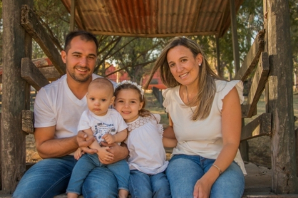

Te prometo capturar las emociones más verdaderas de tu familia de forma bonita y artística, en una sesión alegre, espontánea y llena de emoción.
Voy a poner todo mi cariño en tu sesión y por supuesto voy buscar tu mejor lado y el de todos.
Capacitaciones
Sesiones
Hola Soy Caro
Soy Argentina , casada y madre de 2 hijos y me dedico a la fotografía infantil Fine Art. Si eres fotógrafo, te ayudo a encontrar su sello artístico, tener fotos profesionales, cálidas y llenas de emociones. Si quieres guardar momentos invaluables de tu familia con fotos bonitas y artísticas, te invito a pasar una linda tarde con ellos y conmigo en una entretenida sesión. Sobre Mi ...

PORTFOLIO